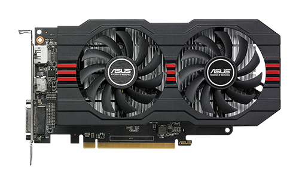
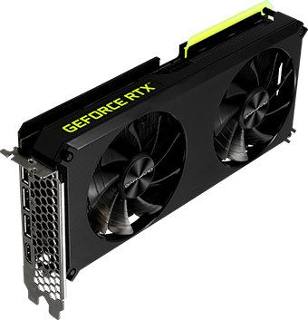

Izbira
Grafične kartice se uporabljajo v mnogih področjih poleg igranja igric, kot so montaža videjev, urejevanje slik in animiranje.
Na primer:
- Za urejanje slik potrebujemo podporo za višje tipe senčenja (vsaj 3.0), visoko resolucijo in hitro procesiranje (za odpiranje visoko kvalitetnih slik, grafično obdelovanje itd.)
- Za montažo videjev potrebujemo kartico z veliko spomina in hitrim pretokom, ter zelo dobro toplotno odvajanje, saj večinoma montiramo po več ur skupaj.
- Za igranje igric pa podobno kot pri montaži potrebujemo ogromno spomina (za zahtevnejše igre vsaj 8GB), visoko pretočnost spomina in dober TDP - thermal design power. Obenem pa moramo biti pozorni na zahtevnosti igre kot so Raytracing in VR.
-

Radeon RX 560Asus.com. (2022) DUAL-RX5500XT-O4G-EVO. CC BY-SA https://www.asus.com/Motherboards-Components/Graphics-Cards/Dual/DUAL-RX5500XT-O4G-EVO/
-
 Nvidia GeForce GTX 1650Gigabyte.com. (23.04.2019) GIGABYTE Unveils GeForce GTX 1650 series graphic card. https://www.gigabyte.com/il/Press/News/1684
Nvidia GeForce GTX 1650Gigabyte.com. (23.04.2019) GIGABYTE Unveils GeForce GTX 1650 series graphic card. https://www.gigabyte.com/il/Press/News/1684 -

Nvidia Geforce RTX 3060Gainward.com (December 2020) GAINWARD GeForce RTX 3060 Ti Series., CC BY-SA https://www.gainward.com/main/edm/rtx3060ti/index_en.php
-
 Nvidia Geforce RTX 3090Nvidia.com. (Marec 2022) GEFORCE RTX 3090 FAMILY., CC BY-SA https://www.nvidia.com/en-me/geforce/graphics-cards/30-series/rtx-3090-3090ti/
Nvidia Geforce RTX 3090Nvidia.com. (Marec 2022) GEFORCE RTX 3090 FAMILY., CC BY-SA https://www.nvidia.com/en-me/geforce/graphics-cards/30-series/rtx-3090-3090ti/
Seveda pa se je treba tudi dotakniti teme denarja, saj nimamo vsi na tisoče evrov, ki jih lahko zapravimo za malo lepše poligone.
Razlika med sodobnejšo generacijo kartic in nekaj let staro je lahko tudi 500 evrov in več zato se moramo vprašati, če je res vredno.
Trenutno pomanjkanje kartic zaradi popularnosti crypto-mininga in vojne v ukrajini inflira ceno vseh višjekakovostnih kartic, kar naredi kupovaje kartic za preprostega uporabnika še toliko težje.